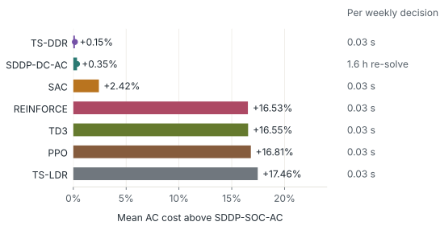
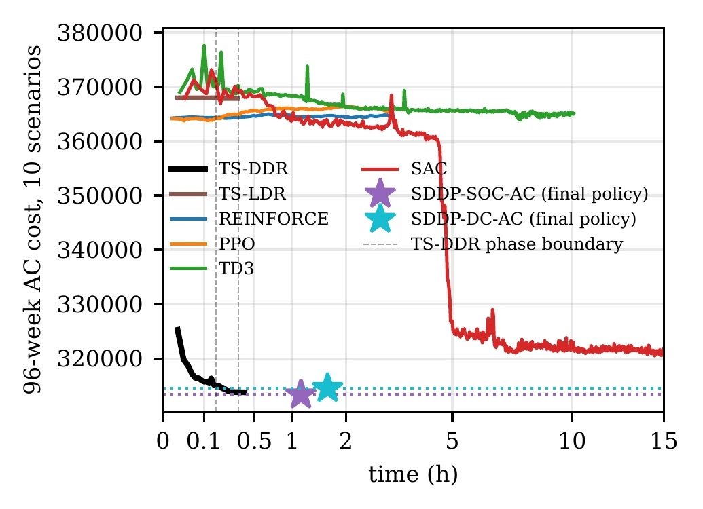
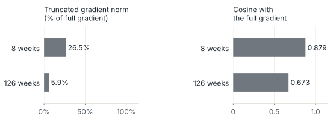
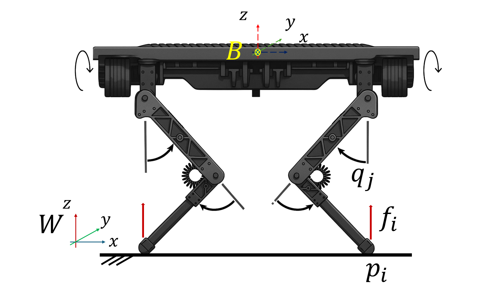
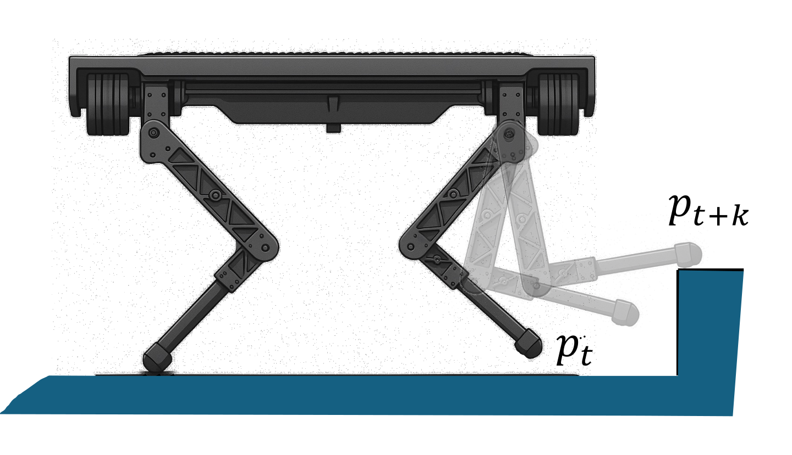

01 · Sequential systemState, recourse, and future cost are coupled at every stage
Decisions made over time are coupled by the state carried from one stage to the next stage. At stage \(t\), the decision maker observes the incoming state \(\mathbf x_{t-1}\) and the realization \(w_t\), then selects the outgoing state \(\mathbf x_t\) and recourse decisions \(\mathbf y_t\). The state collects the observable quantities that couple consecutive stages, such as stored energy, the configuration of a mechanism, or the output of a ramp-limited unit. With stage cost \(f(\mathbf x_t,\mathbf y_t)\), the multistage stochastic program is
Here \(f_t=f(\mathbf x_t,\mathbf y_t)\), \(\mathcal X_t\) is the feasible state–recourse pair set at the given \(\mathbf x_{t-1}\) and \(w_t\), and \(\mathbb E_t[\cdot]=\mathbb E_{\mathbb P}[\cdot\mid w_{[t-1]}]\) integrates over \(w_t\) under the uncertainty law \(\mathbb P\); \(w_{[t]}=(w_1,\dots,w_t)\) is the observed history, with \(w_1\) fixed and \(\mathbf x_0\) given. For a proposed transition, the admissible recourse decisions satisfy the dynamics and the operating constraints,
Here \(n_y\) is the recourse dimension, \(\mathcal T=\mathbf 0\) encodes the dynamics, and \(h\ge\mathbf 0\) collects the operating constraints; the transition may be explicit or implicit, and the feasible set may be nonconvex. A policy is nonanticipative: Its stage-\(t\) decisions may depend on \(\mathbf x_{t-1}\) and the history \(w_{[t]}\), never on later realizations. Because the state carries every interstage coupling, the Bellman recursion separates the stage into an inner recourse problem and an outer choice of the next state,
Here \(n_x\) is the state dimension, \(V_t\) is the optimal cost from stage \(t\) onward at the given state and history, \(\mathcal V_{t+1}\) is its conditional continuation value, and \(q_t\) is the least operating cost of a transition, with \(q_t=+\infty\) when no admissible recourse exists. State decisions, recourse decisions, and the expected future cost are the three computations that any practical method must approximate, retain, or leave implicit.
Stochastic dual dynamic programming (SDDP) approximates the expected future cost by cutting planes built from the values and multipliers of stage problems (Pereira and Pinto, 1991; Füllner and Rebennack, 2025). With convex stages, every cut underestimates the future cost everywhere, operating constraints are enforced exactly, and the first-stage value bounds the optimum. It is the method used to plan large hydro-dominated power systems (Maceira et al., 2018). It requires convex stage problems and, classically, stagewise-independent uncertainty. Its later-stage cuts are accurate only near the states visited in training, so practice re-solves it from the realized state as time advances.
Operating models are often nonconvex, as alternating-current (AC) power flow is. Exact Lagrangian cuts then need nonconvex subproblems solved to global optimality (Zou et al., 2019), so in practice cuts are computed on a convex relaxation or approximation of the network and the system is operated with them on its nonconvex model; Planning and Realization Mismatch shows what that substitution costs (Brigatto et al., 2017; Rosemberg et al., 2022).
Decision rules approximate the policy instead. Affine rules in the observed uncertainty come from adjustable robust optimization (Ben-Tal et al., 2004; Kuhn et al., 2011), and liftings of the uncertainty give nonlinear rules (Georghiou et al., 2015). Two-stage linear decision rules restrict only the state decision to an affine map and keep optimization for the recourse; they dispense with stagewise independence (Bodur and Luedtke, 2022; Nazare and Street, 2023). The affine class limits the trajectories the rule can represent, and its Benders training relies on linear recourse. Model-free policy gradients need neither a differentiable model nor a value function, but they must learn feasibility and long-horizon credit from sampled costs.
02 · State-target policiesPrescribe the transition and retain its realization
Either computation of a stage, the next state or the actions that reach it, can be represented by a learned map. Policies in reinforcement learning and model-based control usually emit the actions, and the transition then determines the state. Two-stage linear decision rules represent the other computation: an affine map emits the state, and the operating model computes the controls that implement it. With any parametric map in place of the affine one, the two forms are
Here the stage index is dropped, \(\mathbf x^-\) is the incoming state, and \(w\) is the information observed so far. The map \(\pi\) emits targets and \(\tilde\pi\) emits actions, both with learned weights \(\theta\), and each approximates the minimizer it replaces: \(\pi\) the state that balances recourse cost against future cost, \(\tilde\pi\) the action that balances stage cost against future cost. In the action form, \(\mathbf x\) follows from the transition, and the pair must lie in \(\mathcal X\); in the state form, \(\mathbf y^\star\) is a selected minimizing control. Since the action and the realized uncertainty together determine the outgoing state, prescribing states instead of actions does not change the best attainable expected cost, so the choice between the two forms leaves the problem unchanged and changes only what must be learned. Methods based on the state form often rely on a working hypothesis: In highly constrained problems, feasible states are easier to predict than feasible actions. A rule that emits controls must keep them feasible for coupled operating constraints, such as the power-flow equations, at every realization; that is itself the problem studied under Learning Solution Maps. States are typically lower-dimensional, their reachable sets often admit simple descriptions, and their trajectories, which accumulate the actions, vary more smoothly than the actions that implement them. Where the hypothesis fails, as in weakly constrained problems, the roles can be inverted in flexible frameworks, such as the one developed in this research.
A policy is the complete nonanticipative map from observed information to implemented decisions, recourse solve included. A decision rule is a member of a parameterized class, here the map \(\pi_t(\cdot;\theta)\) that emits targets. We propose two-stage generalized decision rules (TS-GDR), a generalization of two-stage linear decision rules to any differentiable parametric family. Its deep instance, two-stage deep decision rules (TS-DDR), uses one recurrent network for every stage,
Here the latent state \(\boldsymbol\zeta_t\) summarizes the history. As with recurrent policies in reinforcement learning, the number of parameters does not grow with the horizon, every stage trains the same rule, and the trained rule serves later stages and realized states without retraining. As for any parametric policy, learning such a rule requires an estimate of its expected cost over the trajectories it induces, and gradient-based training also requires the derivative of that cost with respect to \(\theta\).
03 · TrainingA fixed rule induces a two-stage program, and its multipliers give the gradient
Evaluating a policy on the nested program generally requires the conditional minimizations of the Bellman recursion. A fixed rule removes this nesting: Its expected cost can be computed scenario by scenario, so training becomes a two-stage stochastic program whose first stage is \(\theta\). For a sampled path \(\mathbf w=(w_1,\dots,w_T)\), the controls that implement the prescribed states are optimized over the whole path,
Here \(\mathbf x=(\mathbf x_1,\dots,\mathbf x_T)\) and \(\mathbf y=(\mathbf y_1,\dots,\mathbf y_T)\) collect the path variables, and \(\boldsymbol\lambda_t\) is the target multiplier, signed as a value sensitivity to the right-hand side.
Two-stage equivalence. Suppose the state contains every quantity coupling consecutive stages, every prescribed state is reachable from the previous prescribed state for almost every history, each stage problem attains its minimum with an integrable cost, and minimizing controls are selected measurably. Then the cost of operating the policy in the multistage program equals \(\mathbb E[\mathcal Q(\mathbf w;\theta)]\), and training is the two-stage stochastic program \(\min_\theta\mathbb E[\mathcal Q(\mathbf w;\theta)]\).
To see this, let \(V^\pi_t\) be the remaining cost from stage \(t\) when the states follow the rule, \(\hat{\mathbf x}_t=\pi_t(w_{[t]},\mathbf x_0;\theta)\), with \(V^\pi_{T+1}=0\). Substituting the rule into the Bellman recursion removes the choice of the next state, and the tower property collapses the nested expectations:
The recursion for \(V^\pi_t\) holds because, with every state fixed, changing \(\mathbf y_t\) cannot affect a later feasible set or cost. The final equality holds because the feasible set of the full-path problem is the Cartesian product of the stage sets and its objective is their sum; each stage minimizer uses only adjacent targets and the current realization, so the full-path problem adds no foresight. The equivalence requires neither convex stages nor stagewise-independent uncertainty.
Write \(Q(\mathbf w,\hat{\mathbf x})\) for the recourse value at fixed targets, so that \(\mathcal Q(\mathbf w;\theta)=Q(\mathbf w,\hat{\mathbf x}(\mathbf w;\theta))\). The targets enter only as right-hand sides of the constraints \(\mathbf x_t=\hat{\mathbf x}_t:\boldsymbol\lambda_t\), and multipliers are signed as sensitivities of the optimal value to the right-hand side.
Dual gradient. Suppose a selected second-stage local minimizer satisfies linear independence of the active constraint gradients, a second-order sufficient condition, and strict complementarity, and the formulation is twice continuously differentiable. Write \(Q_{\mathrm{loc}}\) for the recourse value along this regular branch and \(\mathcal Q_{\mathrm{loc}}(\mathbf w;\theta)=Q_{\mathrm{loc}}(\mathbf w,\hat{\mathbf x}(\mathbf w;\theta))\). Then
The terms arising from the primal and dual solutions cancel at a KKT point, so the multiplier is the derivative of the recourse value with respect to the target. It is a value derivative, and no solution sensitivity is computed; Differentiating Optimization Models treats the case where the solution sensitivity is needed. For convex recourse, \(\boldsymbol\lambda_t\) is a subgradient by strong duality. For a nonconvex stage, it is the local sensitivity at the solution returned, which is the information needed to improve the policy along the trajectories it visits. The mini-batch gradient is a vector–Jacobian product through the network; the KKT system of the stage problem is never differentiated, as it would be if the optimization were treated as a layer (Agrawal et al., 2019).
![The recurrent policy is unrolled over stages 1 to T; one weight box theta feeds every copy, and each copy reads the uncertainty w_t and the previous target and latent state, and emits the next target and latent state. All targets enter a single recourse problem over the whole horizon, whose target constraints x_t equal to x-hat_t carry the multipliers lambda_t, the derivatives of its value with respect to the targets. The multipliers lambda_1 to lambda_T are collected into the gradient with respect to theta, the sum over t of lambda_t transposed times the policy Jacobian.](../../assets/img/diagrams/decision-rules--two-stage-compact.svg?v=5d136941)
Relation to return-based policy gradients
Policy-gradient methods optimize the same expected cost \(V^\pi_1=\mathbb E[\sum_t f_t]\) under different assumptions on the policy, the transition, and the constraints. With \(\mathcal I_t=(\mathbf x_{t-1},w_{[t]})\) the observed inputs, \(V^{\mathbf w}_t=\sum_{k\ge t}f_k\) the cost-to-go along the sampled scenario \(\mathbf w\), so that \(V^\pi_1=\mathbb E[V^{\mathbf w}_1]\) and, for a state-target rule, \(V^{\mathbf w}_1=\mathcal Q(\mathbf w;\theta)\), \(b_t\) a baseline, and \(\mathcal V^\pi_{t+1}\) the continuation value of the policy, with \(\mathbf x_t\) given by the transition, the three forms are evaluated at the sampled control in the stochastic case and at \(\mathbf y_t=\tilde\pi_t(\mathcal I_t;\theta)\) in the deterministic case:
The first expectation includes the control density \(\tilde\pi_t(\cdot\mid\mathcal I_t;\theta)\) as well as the exogenous law \(\mathbb P\); the other two integrate over \(\mathbb P\) with their respective deterministic policies. The likelihood-ratio form (Williams, 1992) needs only a differentiable policy density, and pays in variance. The deterministic form (Silver et al., 2014) needs \(\nabla_{\mathbf y}\big(f_t+\mathcal V^\pi_{t+1}\big)\), learned by a critic or obtained by differentiating the trajectory, whose accuracy degrades with stiffness and discontinuities (Suh et al., 2022). The third form is pathwise as well, but its action is a target: The solver delivers feasibility, so the hard operating constraints hold at every stage by construction, whereas constrained policy search enforces expected cumulative constraints or penalties (Achiam et al., 2017). The multiplier \(\boldsymbol\lambda_t\) is the exact local sensitivity of the sampled trajectory cost to the stage-\(t\) target, which is the credit a return-based estimator must learn from samples.
04 · Exact realizationReachable targets separate the stages
The equivalence assumes that every prescribed state is reachable. A policy is state-consistent if, for every stage and almost every history, \(\mathcal Y_t(\hat{\mathbf x}_{t-1},\hat{\mathbf x}_t;w_t)\neq\emptyset\), with \(\hat{\mathbf x}_0=\mathbf x_0\). Every interstage state is then fixed, each remaining decision appears in one stage, and the second stage separates into the recourse problems of the stage diagram,
Here \(\boldsymbol\mu_t\) and \(\bar{\boldsymbol\lambda}_t\) are the incoming- and outgoing-state value sensitivities, respectively, and \(Q(\mathbf w,\hat{\mathbf x})=\sum_{t=1}^T q_t\). A target is the outgoing state of one stage and the incoming state of the next stage, so
The \(T\) stage problems of a path are independent once its targets are known, so they are solved in parallel across stages and sampled paths. They are also the problems solved at execution: Training evaluates the controls that will be implemented and reads their value derivatives from the same solves.
![The same recurrent policy as above, unrolled over stages 1, 2, and T, with shared weights theta. Below it, separate stage problems q_1, q_2, and q_T: each receives the two adjacent targets and its own w_t, fixes its incoming state to the previous target with multiplier mu_t and its outgoing state to its target with multiplier lambda-bar_t, and receives nothing from any other stage problem. The multipliers combine as lambda_t equals lambda-bar_t plus mu_{t+1}, with lambda_T equal to lambda-bar_T, and their sum over stages forms the gradient with respect to theta.](../../assets/img/diagrams/decision-rules--parallel-stages-compact.svg?v=3694d9ff)
State consistency is enforced by construction when the reachable set has an explicit description. For storage, substituting the extreme feasible controls into the energy or water balance gives an interval \([\underline{\mathbf x}_t,\overline{\mathbf x}_t]\) that depends on the previous target and the current realization, and the network output \(\mathbf a_t\in[0,1)^{n_x}\), with \(n_x\) the state dimension, may be mapped into it to enforce feasibility,
Here \(\mathbf r_t\) is the componentwise width of the reachable interval, and \(\odot\) denotes componentwise multiplication. A ramp-limited generator is handled the same way, with its output as a state and its ramp window as the interval. Priced emergency service in the nodal balances, identical for every compared policy, keeps the remaining stage constraints feasible for every reachable target. Because the bounds depend on the previous target, the derivative of the map is a recursion over all earlier targets,
Here \(A_t\) is the state-transition Jacobian at fixed \(\mathbf a_t\) and \(w_t\), while \(d\mathbf a_t/d\theta\) includes the recurrent network and its preceding targets; together they carry how a target today changes what is reachable later. Treating the bounds as constants, in the spirit of truncated backpropagation through time (Williams and Peng, 1990), leaves the forward policy unchanged and removes that path from every stage. The multiplier prices a target only in the two stages it couples, so its effect on later stages reaches the gradient through this recursion and through the recurrent policy.
05 · Nearly convex networkWhere SDDP is near optimal, the policy comes within 0.15% of it without a convex model and improves on every model-free agent
The first problem class is the class in which SDDP was developed: Weekly decisions on how much water to release from reservoirs and how much fuel to burn, over a multi-year horizon. The instance is the Bolivian system, with 28 buses, 31 branches, and 34 generators, of which 11 are hydro units in three cascades; every dispatch satisfies the AC power-flow equations. Inflows have 15 equiprobable joint realizations per week, independent across weeks. Policies are trained over 126 weeks and scored over the first 96; checkpoints are selected on 10 validation paths, and all policies are compared on the same 490 test paths.
The baselines are SDDP whose cuts are computed on the second-order-cone relaxation (SDDP-SOC-AC) or on the direct-current approximation (SDDP-DC-AC) of the network, with forward passes and the final simulation on the AC model; the affine rule (TS-LDR), trained with the same dual gradients, schedule, and reachable map, so that only the functional form differs; and REINFORCE, PPO, TD3, and SAC (Williams, 1992; Schulman et al., 2017; Fujimoto et al., 2018; Haarnoja et al., 2018), which act through the same reachable map and the same AC stage problem. The backward bound of SDDP-SOC-AC lies only 0.24% below its AC simulation, so the relaxation is nearly tight on this essentially radial network, and SDDP with conic cuts is the benchmark to approach.
SDDP-SOC-AC attains a mean cost of 313,550, and TS-DDR, trained from random initialization with no convex model, 314,029: 0.15% higher, a gap an order of magnitude smaller than the spread across scenarios. TS-DDR is cheaper than SDDP-DC-AC in 447 of the 490 test paths. The affine rule, trained with the same gradients, is 17.46% above the benchmark, so the expressive policy is required. No policy sheds load.

SAC settles 2.42% above the benchmark and is costlier than TS-DDR in every test scenario, while REINFORCE, PPO, and TD3 remain near the cost of their initial policies, 16.5% to 16.8% above. Each agent observes the incoming storage, the current inflow, and the stage, a sufficient statistic under stagewise-independent inflows, and used 69,000 training episodes, 4.6 times the 15,040 scenarios used by TS-DDR. The decision rule reaches 316,400 after 4 minutes of training, below the final cost that every agent attains after 3 to 17 hours. The value of water released in week \(t\) materializes many weeks later. Return-based estimators must learn that credit from noisy samples, whereas \(\boldsymbol\lambda_t\) is the local marginal effect of the week-\(t\) target on the cost of the whole trajectory.

The duals price each target in the two stages it couples, and the reachable-map recursion propagates most of the long-horizon signal back from the impacted stages to where the decisions are made. Treating the bounds as constants leaves 26.5% of the gradient norm over an eight-week horizon and 5.9% over 126 weeks, with cosine similarity to the full gradient falling from 0.879 to 0.673. All reported policies use the full derivative.

Training time and decision time are different quantities. TS-DDR trained once, in 0.4 hours on three GPUs, and each weekly decision then takes 0.03 seconds: one network evaluation and one stage solve. SDDP-SOC-AC took 1.1 hours, and operational practice repeats that solution, at least in part, from the realized state at each planning cycle, because its later-stage cuts are accurate only near visited states.
06 · No accurate surrogateWithout an accurate convex surrogate, training against the detailed model leaves the smallest residual
The second problem class has no convex surrogate that is both accurate and tractable. A 793-bus network with 159 batteries, 82 dispatchable generators, and 30 renewable units is operated over 13 hourly stages: A renewable-rich period, a lull, and a five-hour regional stress in which active and reactive demand rise by 20%. Energy stored early must be carried through the lull and delivered through a congested AC network, where losses, voltage, and reactive limits make a stored megawatt-hour worth different amounts at different buses. The deterministic instances admit a full-horizon AC solution, agreed on by two nonlinear solvers; excess cost is measured against this best-known operation, which is not a certified optimum.
Without ramp limits, TS-DDR operates 0.31% above the reference with no unserved energy; SDDP-DC-AC follows at 0.70%; the affine rule reaches 4.55% and sheds 21 MWh; SDDP-SOC-AC costs 61.98% more and sheds 494 MWh. With storage held at its incoming level, the single-hour conic relaxation is 3.4–6.6% below the AC cost outside the lull and 52–83% below it during the stress, when voltage and reactive limits bind: The relaxation is least accurate in the hours in which stored energy is most valuable, and its cuts undervalue retention. SDDP-DC-AC converges well, yet continuing it from 165 to 575 iterations lowers its excess only from 0.85% to 0.70%. That residual is the cost of valuing storage with an approximate network, which further iterations do not remove. TS-DDR, trained against the AC model, passes below the final SDDP-DC-AC policy after 8 minutes and reaches 0.31% after 1.5 hours; the SDDP solution itself takes 5.4 hours.
Generator ramp limits make each dispatchable output a state, raising the state dimension from 159 to 241. TS-DDR operates 2.37% above the reference without unserved energy; SDDP-DC-AC operates 4.76% above it and sheds 36 MWh; SDDP-SOC-AC and the affine rule exceed 100%. The larger state lengthens training: SDDP-DC-AC is solved in 20.6 hours, while TS-DDR matches its policy after about 4 hours and reaches 2.37% after 18.5 hours.

The small residual of SDDP-DC-AC depends on the operating conditions. In a variant whose stressed region has more resistive lines, with their DC model unchanged, and higher reactive demand, the DC problem represents almost none of the scarcity that stored energy must cover, so its prices and cut slopes give little value to retention. The converged SDDP-DC-AC policy then operates 17.07% above the AC reference and sheds 147.2 MWh; TS-DDR, trained from scratch on the variant, operates 1.52% above it after 3.2 hours of training and sheds 4.8 MWh.
The stochastic instance uses the ramp-limited variant with a milder 2% stress and uncertain demand: 850 equiprobable realizations at each hour, independent across hours, about \(10^{38}\) paths. Every SDDP iteration solves the backward problem of each realization at every stage, whereas a TS-DDR update solves one problem per sampled path, whatever the size of the support. No full-horizon solution can serve as a reference once uncertainty is revealed along the horizon, so costs are measured against the mean perfect-information AC cost of the test paths, which no nonanticipative policy can be expected to attain. The forward cost of SDDP-DC-AC stays about 50% above this reference for the first 4.3 hours and settles near 11% after 5.6 hours; TS-DDR is below it from the start of training, reaches that level on the validation paths after 2.1 hours, and continues to 6.7% after 4.7 hours. On 100 test paths, TS-DDR operates 7.4% above it and sheds 18 MWh; SDDP-DC-AC operates 11.1% above it and sheds 76 MWh.
![Four training-curve panels of AC cost excess on logarithmic axes against time on square-root axes. Deterministic, no ramp limits: TS-DDR falls below 1% within minutes and ends near 0.3% at 1.5 hours, while SDDP-DC-AC fluctuates near 0.7% up to about 5.4 hours, the affine rule stalls near 4.5%, and SDDP-SOC-AC stays near 60%. Deterministic, ramp limits: TS-DDR ends near 2.4% after about 18.5 hours, below SDDP-DC-AC near 5% at 20.6 hours. Stochastic demand: TS-DDR reaches about 6.7% after 4.7 hours, while SDDP-DC-AC stays near 50% for about 4.3 hours and then settles near 11%. Scarcity invisible to the DC model: two TS-DDR runs with different learning rates fall below the SDDP-DC-AC forward cost, which settles near 17%, within half an hour; the larger rate reaches about 1.5% after 3.2 hours.](../../assets/img/research/decision-rules-battery-training-tall.webp)
07 · Implicit dynamicsWhen the reachable set has no closed form, targets are penalized or corrected causally
Every result above uses strict targets mapped into closed-form reachable intervals. Many dynamics provide no such description. An implicit integrator, such as backward Euler, defines the next state through a nonlinear equation,
Here \(F_{\mathrm c}\) is the continuous-time vector field and \(\Delta t\) is the step length; the reachable set is the image of the control set under the solution map of that equation, and even membership requires a solve. Stability-constrained dispatch (Gan et al., 2000) and transient gas flow (Zlotnik et al., 2015) lead to such relations, and so do the stiff mechanical systems for which implicit steps are chosen. Underactuation and contact confine the reachable set to a lower-dimensional set, so a full-state target emitted by an unconstrained network is infeasible almost surely, and no construction is known that keeps every such target reachable. The separation of Section 04 is then lost.
The general construction imposes targets through penalized slacks,
Here \(\boldsymbol\delta_t\) is an unrestricted target discrepancy and \(C^\delta_t>0\) its penalty coefficient; the multipliers still differentiate the penalized value, and the penalty bounds them in the dual norm by \(C^\delta_t\). When reachable targets exist and the policy class can emit them, an infinite penalty makes the two formulations share their optimum. A finite penalty that dominates the target multipliers of the strict problem, \(C^\delta_t>\lVert\boldsymbol\lambda_t\rVert_*\), leaves the value unchanged at reachable targets; it preserves the optimum only if it also exceeds what the full-path corrections gain from later observations. At intermediate, unreachable targets, however, the full-path optimizer chooses its corrections using later observations, so the penalized cost is a training surrogate and no longer the cost of a nonanticipative implementation.
The causal alternative solves the stages in sequence, as the policy is operated. Stage \(t\) receives the realized state \(\mathbf x^\star_{t-1}\), solves a target controller, and passes on \(\mathbf x^\star_t=X_t(\mathbf x^\star_{t-1},\hat{\mathbf x}_t;w_t)\); the policy can then read the realized state. Let \(q^\delta_t\) be the penalized value of stage \(t\), \(\mathcal Q^\delta(\mathbf w;\theta)=\sum_tq^\delta_t\) the cost of this causal rollout, and \(V^{\mathbf w}_{t+1}(\mathbf x^\star_t)\) the cost-to-go along the sampled scenario, with later targets responding to \(\mathbf x^\star_t\). A target now also moves the state handed to every later stage, so the gradient adds solution sensitivities to the multipliers,
Here \(\bar{\boldsymbol\lambda}_t=\nabla_{\hat{\mathbf x}_t}q_t^\delta\) is the penalized stage-value derivative, and \(\partial\pi_t/\partial\theta\) is taken at fixed inputs, including the carried memory. Unrolled, a target reaches stage \(k\) through a product of up to \(T-1\) stage sensitivities, which, as in recurrent networks, can shrink or grow geometrically, and whose factors carry solver error and are undefined where the active set changes. With strict reachable targets, \(\partial X_t/\partial\hat{\mathbf x}_t=I\) and \(\partial X_t/\partial\mathbf x^\star_{t-1}=0\), and the expression reduces to the separated dual signal. Windows of several stages solved jointly lie between the two extremes: Inside a window, the coupling reaches each target through its multiplier, and only window boundaries are chained, so the window length trades the size of each problem against the length of the chain.
![Two consecutive stages of the causal rollout with penalized targets. Stage 1 receives the initial state, stage 2 the state realized by stage 1; each stage problem implements its target up to a penalized discrepancy delta_t and passes its realized state both to the next stage problem and to the next copy of the policy. Under each stage problem, its target multiplier lambda-bar_t and its solution sensitivities, the derivatives of the realized state X_t with respect to the target and to the incoming state. A dashed chain of derivatives dV^{\mathbf w}_{t+1}/dx-star_t runs backward from each stage to the previous one, and the gradient with respect to theta sums the multiplier and the later-stage effect over the stages.](../../assets/img/diagrams/decision-rules--causal-stages-compact.svg?v=cfb5a9b2)
Contact adds a further obstruction. Unilateral contact imposes, for each gap \(d_i(\mathbf q)\) and normal force \(\gamma_{n,i}\),
These conditions make each time-stepping stage a mathematical program with complementarity constraints (Stewart and Trinkle, 1996). At its solutions, linear independence of the active constraints fails and the multipliers are not unique, so neither the dual gradient nor the solution sensitivities are defined. Fixing the contact schedule makes each stage smooth within its mode and leaves the schedule to an outer search; relaxing complementarity to \(d_i(\mathbf q)\gamma_{n,i}\le\epsilon\) restores regular solutions at a controlled loss of contact accuracy (Scholtes, 2001).


Discrete operating modes in energy systems, such as unit commitment, pose the same difficulty. Which of the strict, penalized, and causal formulations each class of dynamics admits, and when the smaller problems of a decomposition repay the sensitivities they must propagate, is decided by the operating cost and constraint satisfaction of the implemented decisions on the intended model.
08 · Long horizonsA learned continuation value closes a shorter training window
Training from complete trajectories assigns credit through every subsequent stage, so the cost of each update grows with the horizon. A learned value can replace the unobserved tail of a shorter rollout (Konda and Tsitsiklis, 1999). For a window of \(H\) stages beginning at stage \(k\), a state-consistent rule is trained on
Here \(\ell\) is the last stage of the window, \(\mathbf b_\ell\) collects its boundary state, carried memory, and observed history, and \(\psi\) parameterizes a critic of the current policy's remaining cost. The critic is held fixed during the actor update, and its derivatives at the window boundary supplement the dual signal; in the causal decomposition of Section 07, they replace the cross-window term that would otherwise chain the sensitivities of every later window. The critic trades the exactness of the full-path gradient for windows that need not cover the horizon.
Continuation-Value Representations develops a convex critic for this role, whose subgradients play the role of \(\nabla\mathcal V_{t+1}\), the conditional average \(\mathbb E_{t+1}[\boldsymbol\mu_{t+1}]\) of the incoming-state multipliers, in the stage diagram. On the storage problems above, the window length trades the cost of each update against the bias of the critic, and windowed and full-horizon training can be compared on the same instances.
09 · ScopeThe method gives no optimality bound and keeps one stage solve per decision
The method provides no bound on the optimal cost, unlike SDDP. Its training effort grows with the dimension of the state, as the ramp-limited instance showed. Its strict form requires the reachable set in closed form, and the output maps used so far either never attain the endpoints of the interval, which optimal storage operation often visits, or lose their derivative there. Each decision still requires one stage solve of the operating model, 2.5 to 3.9 seconds on average on the battery network.
When that solve exceeds the decision time, a learned recourse map can replace it, and its feasibility and local response then enter the policy; Learning Solution Maps treats that approximation. When the targets are tracked by a controller with its own objective, such as model predictive control, the multipliers no longer give the gradient of the policy's cost, and the solution sensitivities of the controller are needed (Amos et al., 2018); Differentiating Optimization Models supplies them for smooth nonconvex models. When the recourse is selected by another agent's optimization, the composition becomes the object of Endogenous Response.
Software
DecisionRules.jl trains state-target policies through stage problems written in JuMP with the dual gradient of Section 03, and the hydrothermal case ships in its examples/HydroPowerModels. The SDDP baselines, which compute cuts on a convex network model and operate under AC power flow, are built with PowerModels and SDDP.jl, the packages on which HydroPowerModels.jl composes planning and operating formulations.

DecisionRules.jl
Trains policies whose state targets are realized by an optimization over the operating model, with gradients from the multipliers of the target constraints.

HydroPowerModels.jl
Multistage hydrothermal planning by SDDP over any PowerModels network formulation, with one formulation computing the cuts and another operating the system.
References
- J. Achiam, D. Held, A. Tamar, P. Abbeel. Constrained Policy Optimization. International Conference on Machine Learning 22–31, 2017.
- A. Agrawal, B. Amos, S. Barratt, S. Boyd, S. Diamond, J. Z. Kolter. Differentiable Convex Optimization Layers. Advances in Neural Information Processing Systems 32, 2019.
- B. Amos, I. Jimenez, J. Sacks, B. Boots, J. Z. Kolter. Differentiable MPC for End-to-End Planning and Control. Advances in Neural Information Processing Systems 31, 2018.
- A. Ben-Tal, A. Goryashko, E. Guslitzer, A. Nemirovski. Adjustable Robust Solutions of Uncertain Linear Programs. Mathematical Programming 99(2):351–376, 2004.
- M. Bodur, J. R. Luedtke. Two-Stage Linear Decision Rules for Multi-Stage Stochastic Programming. Mathematical Programming 191(1):347–380, 2022.
- A. Brigatto, A. Street, D. M. Valladão. Assessing the Cost of Time-Inconsistent Operation Policies in Hydrothermal Power Systems. IEEE Transactions on Power Systems 32(6):4541–4550, 2017.
- S. Fujimoto, H. van Hoof, D. Meger. Addressing Function Approximation Error in Actor-Critic Methods. Proceedings of the 35th International Conference on Machine Learning 1587–1596, 2018.
- C. Füllner, S. Rebennack. Stochastic Dual Dynamic Programming and Its Variants: A Review. SIAM Review 67(3):415–539, 2025.
- D. Gan, R. J. Thomas, R. D. Zimmerman. Stability-Constrained Optimal Power Flow. IEEE Transactions on Power Systems 15(2):535–540, 2000.
- A. Georghiou, W. Wiesemann, D. Kuhn. Generalized Decision Rule Approximations for Stochastic Programming via Liftings. Mathematical Programming 152(1–2):301–338, 2015.
- T. Haarnoja, A. Zhou, P. Abbeel, S. Levine. Soft Actor-Critic: Off-Policy Maximum Entropy Deep Reinforcement Learning with a Stochastic Actor. International Conference on Machine Learning 1861–1870, 2018.
- V. Konda, J. Tsitsiklis. Actor-Critic Algorithms. Advances in Neural Information Processing Systems 12, 1999.
- D. Kuhn, W. Wiesemann, A. Georghiou. Primal and Dual Linear Decision Rules in Stochastic and Robust Optimization. Mathematical Programming 130(1):177–209, 2011.
- M. E. P. Maceira, D. D. J. Penna, A. L. Diniz, R. J. Pinto, A. C. G. Melo, C. V. Vasconcellos, C. B. Cruz. Twenty Years of Application of Stochastic Dual Dynamic Programming in Official and Agent Studies in Brazil: Main Features and Improvements on the NEWAVE Model. Power Systems Computation Conference 1–7, 2018.
- F. Nazare, A. Street. Solving Multistage Stochastic Linear Programming via Regularized Linear Decision Rules: An Application to Hydrothermal Dispatch Planning. European Journal of Operational Research 309(1):345–358, 2023.
- M. V. F. Pereira, L. M. V. G. Pinto. Multi-Stage Stochastic Optimization Applied to Energy Planning. Mathematical Programming 52:359–375, 1991.
- S. Scholtes. Convergence Properties of a Regularization Scheme for Mathematical Programs with Complementarity Constraints. SIAM Journal on Optimization 11(4):918–936, 2001.
- J. Schulman, F. Wolski, P. Dhariwal, A. Radford, O. Klimov. Proximal Policy Optimization Algorithms. Preprint, arXiv:1707.06347, 2017.
- D. Silver, G. Lever, N. Heess, T. Degris, D. Wierstra, M. Riedmiller. Deterministic Policy Gradient Algorithms. Proceedings of the 31st International Conference on Machine Learning 387–395, 2014.
- D. E. Stewart, J. C. Trinkle. An Implicit Time-Stepping Scheme for Rigid Body Dynamics with Inelastic Collisions and Coulomb Friction. International Journal for Numerical Methods in Engineering 39(15):2673–2691, 1996.
- H. J. Suh, M. Simchowitz, K. Zhang, R. Tedrake. Do Differentiable Simulators Give Better Policy Gradients? Proceedings of the 39th International Conference on Machine Learning 20668–20696, 2022.
- R. J. Williams. Simple Statistical Gradient-Following Algorithms for Connectionist Reinforcement Learning. Machine Learning 8(3):229–256, 1992.
- R. J. Williams, J. Peng. An Efficient Gradient-Based Algorithm for On-Line Training of Recurrent Network Trajectories. Neural Computation 2(4):490–501, 1990.
- A. Zlotnik, M. Chertkov, S. Backhaus. Optimal Control of Transient Flow in Natural Gas Networks. Proceedings of the 54th IEEE Conference on Decision and Control 4563–4570, 2015.
- J. Zou, S. Ahmed, X. A. Sun. Stochastic Dual Dynamic Integer Programming. Mathematical Programming 175(1–2):461–502, 2019.
- A. W. Rosemberg, A. Street, J. D. Garcia, D. M. Valladão, T. Silva, O. Dowson. Assessing the Cost of Network Simplifications in Long-Term Hydrothermal Dispatch Planning Models. IEEE Transactions on Sustainable Energy 13(1):196–206, 2022.
Publication
Efficiently Training Deep-Learning Parametric Policies using Lagrangian Duality
Workshop title: Training Deep-Parametric Policies Using Lagrangian Duality. An extended journal version with new storage studies is in preparation.
arXiv Code OpenReviewBibTeX
@misc{rosemberg2024efficiently, title = {Efficiently Training Deep-Learning Parametric Policies using Lagrangian Duality}, author = {Rosemberg, Andrew W. and Street, Alexandre and Vallad{\~a}o, Davi M. and Van Hentenryck, Pascal}, year = {2024}, eprint = {2405.14973}, archivePrefix = {arXiv}, primaryClass = {cs.LG} }